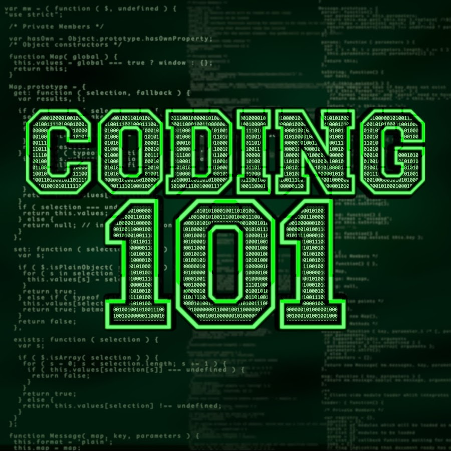

Coding 101
Last Updated: August 2,2021
If you don’t know the first thing about coding, you’ve come to the right place. We’ve put together a beginner’s tutorial which will give you all the background information you need on coding, before you start learning it for real. It starts with an explanation on the benefits of learning coding. Here, you’ll find out what you’ll be able to do once you know how to work with code. Then, you’ll get a deeper understanding of how coding works, and how the code you write gets converted into an instruction that a computer can ‘understand’. Very satisfying to know! That’s followed by an outline of today’s coding languages. After all, every language has a purpose – some are for the web, others for app development, others for desktop software. You’ll find out why web development is an ideal form of coding to start off with, and then get a full overview of it. You’ll also be introduced to web design and app development. Finally – and most importantly – there’s a step-by-step action plan that will outline the fastest and easiest way to get started in coding, and become a coder in 6 months,Learning coding has many benefits – whether you’re looking for a career in the industry, starting a new hobby or just wanting to understand technology.
ALL THE BEST WITH CODING!